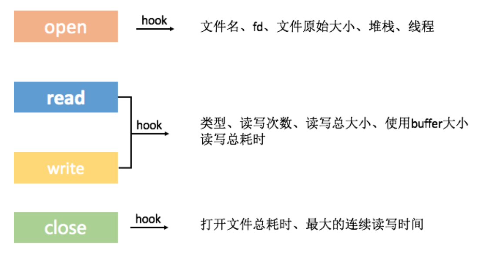
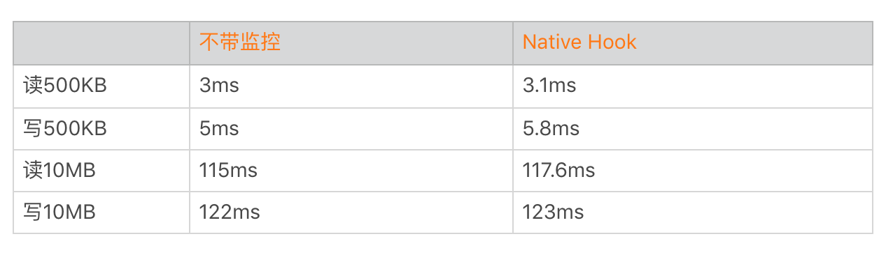
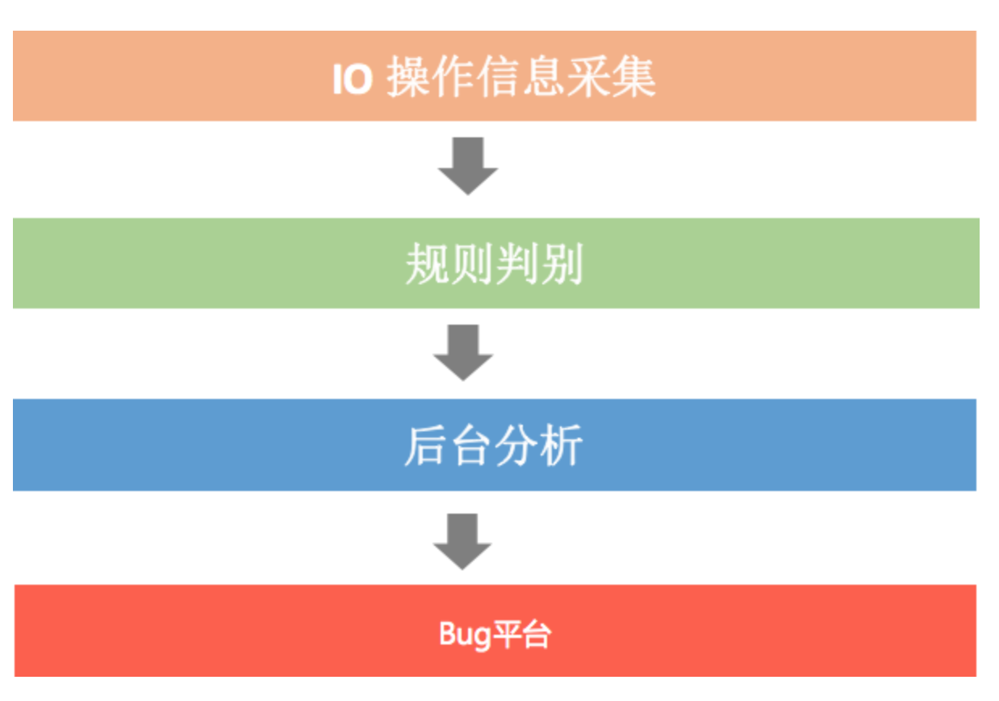
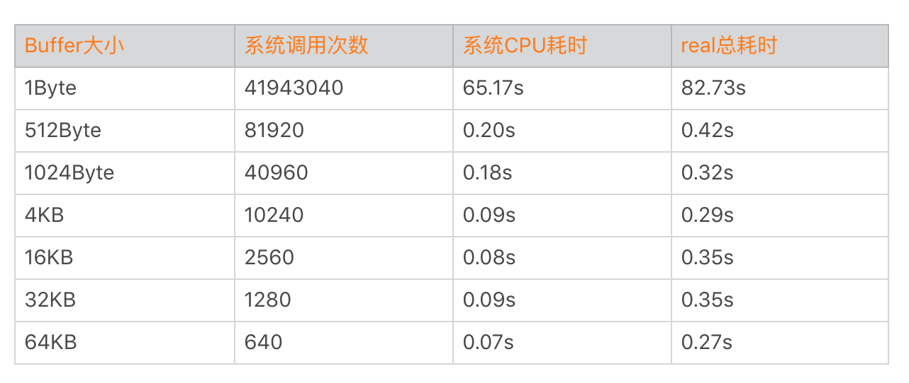
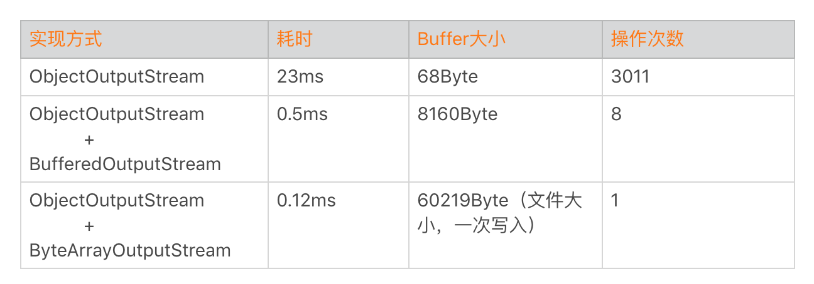
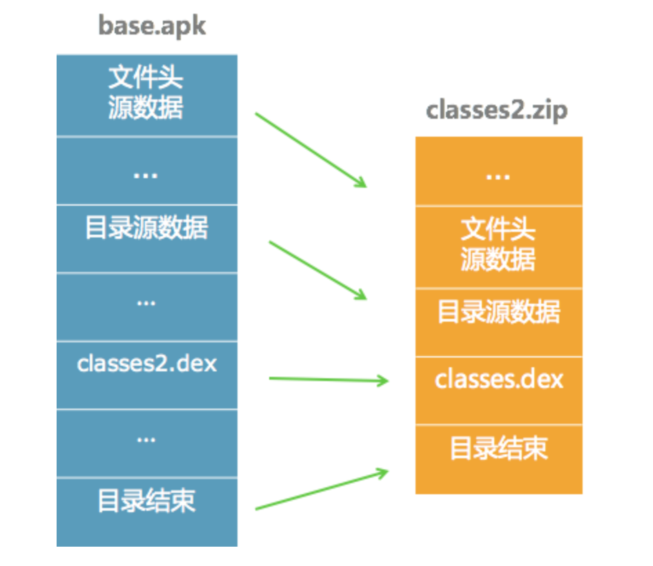

通过前面的学习，相信你对 I/O 相关的基础知识有了一些认识，也了解了测量 I/O 性能的方法。
但是在实际应用中，你知道有哪些 I/O 操作是不合理的吗？我们应该如何发现代码中不合理的 I/O 操作呢？或者更进一步，我们能否在线上持续监控应用程序中 I/O 的使用呢？今天我们就一起来看看这些问题如何解决。
I/O 跟踪
在监控 I/O 操作之前，你需要先知道应用程序中究竟有哪些 I/O 操作。
我在专栏前面讲卡顿优化的中提到过，Facebook 的 Profilo 为了拿到 ftrace 的信息，使用了 PLT Hook 技术监听了“atrace_marker_fd”文件的写入。那么还有哪些方法可以实现 I/O 跟踪，而我们又应该跟踪哪些信息呢？
1. Java Hook
出于兼容性的考虑，你可能第一时间想到的方法就是插桩。但是插桩无法监控到所有的 I/O 操作，因为有大量的系统代码也同样存在 I/O 操作。
出于稳定性的考虑，我们退而求其次还可以尝试使用 Java Hook 方案。以 Android 6.0 的源码为例，FileInputStream 的整个调用流程如下。
java : FileInputStream -> IoBridge.open -> Libcore.os.open -> BlockGuardOs.open -> Posix.open在Libcore.java中可以找到一个挺不错的 Hook 点，那就是BlockGuardOs这一个静态变量。如何可以快速找到合适的 Hook 点呢？一方面需要靠经验，但是耐心查看和分析源码是必不可少的工作。
public static Os os = new BlockGuardOs(new Posix());// 反射获得静态变量Class<?> clibcore = Class.forName("libcore.io.Libcore");Field fos = clibcore.getDeclaredField("os");我们可以通过动态代理的方式，在所有 I/O 相关方法前后加入插桩代码，统计 I/O 操作相关的信息。事实上，BlockGuardOs 里面还有一些 Socket 相关的方法，我们也可以用来统计网络相关的请求。
// 动态代理对象Proxy.newProxyInstance(cPosix.getClassLoader(), getAllInterfaces(cPosix), this); beforeInvoke(method, args, throwable);result = method.invoke(mPosixOs, args);afterInvoke(method, args, result);看起来这个方案好像挺不错的，但在实际使用中很快就发现这个方法有几个缺点。
-
性能极差。I/O 操作调用非常频繁，因为使用动态代理和 Java 的大量字符串操作，导致性能比较差，无法达到线上使用的标准。
-
无法监控 Native 代码。例如微信中有大量的 I/O 操作是在 Native 代码中，使用 Java Hook 方案无法监控到。
-
兼容性差。Java Hook 需要每个 Android 版本去兼容，特别是 Android P 增加对非公开 API 限制。
2. Native Hook
如果 Java Hook 不能满足需求，我们自然就会考虑 Native Hook 方案。Profilo 使用到是 PLT Hook 方案，它的性能比GOT Hook要稍好一些，不过 GOT Hook 的兼容性会更好一些。
关于几种 Native Hook 的实现方式与差异，我在后面会花篇幅专门介绍，今天就不展开了。最终是从 libc.so 中的这几个函数中选定 Hook 的目标函数。
int open(const char *pathname, int flags, mode_t mode);ssize_t read(int fd, void *buf, size_t size);ssize_t write(int fd, const void *buf, size_t size); write_cukint close(int fd);因为使用的是 GOT Hook，我们需要选择一些有调用上面几个方法的 library。微信 Matrix 中选择的是libjavacore.so、libopenjdkjvm.so、libopenjdkjvm.so，可以覆盖到所有的 Java 层的 I/O 调用，具体可以参考io_canary_jni.cc。
不过我更推荐 Profilo 中atrace.cpp的做法，它直接遍历所有已经加载的 library，一并替换。
void hookLoadedLibs() { auto& functionHooks = getFunctionHooks(); auto& seenLibs = getSeenLibs(); facebook::profilo::hooks::hookLoadedLibs(functionHooks, seenLibs);}不同版本的 Android 系统实现有所不同，在 Android 7.0 之后，我们还需要替换下面这三个方法。
open64__read_chk__write_chk3. 监控内容
在实现 I/O 跟踪后，我们需要进一步思考需要监控哪些 I/O 信息。假设读取一个文件，我们希望知道这个文件的名字、原始大小、打开文件的堆栈、使用了什么线程这些基本信息。
接着我们还希望得到这一次操作一共使用了多长时间，使用的 Buffer 是多大的。是一次连续读完的，还是随机的读取。通过上面 Hook 的四个接口，我们可以很容易的采集到这些信息。

下面是一次 I/O 操作的基本信息，在主线程对一个大小为 600KB 的“test.db”文件。
使用了 4KB 的 Buffer，连续读取 150 次，一次性把整个文件读完，整体的耗时是 10ms。因为连读读写时间和打开文件的总时间相同，我们可以判断出这次 read() 操作是一气呵成的，中间没有间断。
因为 I/O 操作真的非常频繁，采集如此多的信息，对应用程序的性能会造成多大的影响呢？我们可以看看是否使用 Native Hook 的耗时数据。

你可以看到采用 Native Hook 的监控方法性能损耗基本可以忽略，这套方案可以用于线上。
线上监控
通过 Native Hook 方式可以采集到所有的 I/O 相关的信息，但是采集到的信息非常多，我们不可能把所有信息都上报到后台进行分析。
对于 I/O 的线上监控，我们需要进一步抽象出规则，明确哪些情况可以定义为不良情况，需要上报到后台，进而推动开发去解决。

1. 主线程 I/O
我不止一次说过，有时候 I/O 的写入会突然放大，即使是几百 KB 的数据，还是尽量不要在主线程上操作。在线上也会经常发现一些 I/O 操作明明数据量不大，但是最后还是 ANR 了。
当然如果把所有的主线程 I/O 都收集上来，这个数据量会非常大，所以我会添加“连续读写时间超过 100 毫秒”这个条件。之所以使用连续读写时间，是因为发现有不少案例是打开了文件句柄，但不是一次读写完的。
在上报问题到后台时，为了能更好地定位解决问题，我通常还会把 CPU 使用率、其他线程的信息以及内存信息一并上报，辅助分析问题。
2. 读写 Buffer 过小
我们知道，对于文件系统是以 block 为单位读写，对于磁盘是以 page 为单位读写，看起来即使我们在应用程序上面使用很小的 Buffer，在底层应该差别不大。那是不是这样呢？
read(53, "*****************"\.\.\., 1024) = 1024 <0.000447>read(53, "*****************"\.\.\., 1024) = 1024 <0.000084>read(53, "*****************"\.\.\., 1024) = 1024 <0.000059>虽然后面两次系统调用的时间的确会少一些，但是也会有一定的耗时。如果我们的 Buffer 太小，会导致多次无用的系统调用和内存拷贝，导致 read/write 的次数增多，从而影响了性能。
那应该选用多大的 Buffer 呢？我们可以跟据文件保存所挂载的目录的 block size 来确认 Buffer 大小，数据库中的pagesize就是这样确定的。
new StatFs("/data").getBlockSize()所以我们最终选择的判断条件为：
-
buffer size 小于 block size，这里一般为 4KB。
-
read/write 的次数超过一定的阈值，例如 5 次，这主要是为了减少上报量。
buffer size 不应该小于 4KB，那它是不是越大越好呢？你可以通过下面的命令做一个简单的测试，读取测试应用的 iotest 文件，它的大小是 40M。其中 bs 就是 buffer size，bs 分别使用不同的值，然后观察耗时。
// 每次测试之前需要手动释放缓存echo 3 > /proc/sys/vm/drop_cachestime dd if=/data/data/com.sample.io/files/iotest of=/dev/null bs=4096
通过上面的数据大致可以看出来，Buffer 的大小对文件读写的耗时有非常大的影响。耗时的减少主要得益于系统调用与内存拷贝的优化，Buffer 的大小一般我推荐使用 4KB 以上。
在实际应用中，ObjectOutputStream 和 ZipOutputStream 都是一个非常经典的例子，ObjectOutputStream 使用的 buffer size 非常小。而 ZipOutputStream 会稍微复杂一些，如果文件是 Stored 方式存储的，它会使用上层传入的 buffer size。如果文件是 Deflater 方式存储的，它会使用 DeflaterOutputStream 的 buffer size，这个大小默认是 512Byte。
你可以看到，如果使用 BufferInputStream 或者 ByteArrayOutputStream 后整体性能会有非常明显的提升。

正如我上一期所说的，准确评估磁盘真实的读写次数是比较难的。磁盘内部也会有很多的策略，例如预读。它可能发生超过你真正读的内容，预读在有大量顺序读取磁盘的时候，readahead 可以大幅提高性能。但是大量读取碎片小文件的时候，可能又会造成浪费。
你可以通过下面的这个文件查看预读的大小，一般是 128KB。
/sys/block/[disk]/queue/read_ahead_kb一般来说，我们可以利用 /proc/sys/vm/block_dump 或者/proc/diskstats的信息统计真正的磁盘读写次数。
/proc/diskstats块设备名字|读请求次数|读请求扇区数|读请求耗时总和\.\.\.\.dm-0 23525 0 1901752 45366 0 0 0 0 0 33160 57393dm-1 212077 0 6618604 430813 1123292 0 55006889 3373820 0 921023 38058233. 重复读
微信之前在做模块化改造的时候，因为模块间彻底解耦了，很多模块会分别去读一些公共的配置文件。
有同学可能会说，重复读的时候数据都是从 Page Cache 中拿到，不会发生真正的磁盘操作。但是它依然需要消耗系统调用和内存拷贝的时间，而且 Page Cache 的内存也很有可能被替换或者释放。
你也可以用下面这个命令模拟 Page Cache 的释放。
echo 3 > /proc/sys/vm/drop_caches如果频繁地读取某个文件，并且这个文件一直没有被写入更新，我们可以通过缓存来提升性能。不过为了减少上报量，我会增加以下几个条件：
-
重复读取次数超过 3 次，并且读取的内容相同。
-
读取期间文件内容没有被更新，也就是没有发生过 write。
加一层内存 cache 是最直接有效的办法，比较典型的场景是配置文件等一些数据模块的加载，如果没有内存 cache，那么性能影响就比较大了。
public String readConfig() { if (Cache != null) { return cache; } cache = read("configFile"); return cache;}4. 资源泄漏
在崩溃分析中，我说过有部分的 OOM 是由于文件句柄泄漏导致。资源泄漏是指打开资源包括文件、Cursor 等没有及时 close，从而引起泄露。这属于非常低级的编码错误，但却非常普遍存在。
如何有效的监控资源泄漏？这里我利用了 Android 框架中的 StrictMode，StrictMode 利用CloseGuard.java类在很多系统代码已经预置了埋点。
到了这里，接下来还是查看源码寻找可以利用的 Hook 点。这个过程非常简单，CloseGuard 中的 REPORTER 对象就是一个可以利用的点。具体步骤如下：
-
利用反射，把 CloseGuard 中的 ENABLED 值设为 true。
-
利用动态代理，把 REPORTER 替换成我们定义的 proxy。
虽然在 Android 源码中，StrictMode 已经预埋了很多的资源埋点。不过肯定还有埋点是没有的，比如 MediaPlayer、程序内部的一些资源模块。所以在程序中也写了一个 MyCloseGuard 类，对希望增加监控的资源，可以手动增加埋点代码。
I/O 与启动优化
通过 I/O 跟踪，可以拿到整个启动过程所有 I/O 操作的详细信息列表。我们需要更加的苛刻地检查每一处 I/O 调用，检查清楚是否每一处 I/O 调用都是必不可少的，特别是 write()。
当然主线程 I/O、读写 Buffer、重复读以及资源泄漏是首先需要解决的，特别是重复读，比如 cpuinfo、手机内存这些信息都应该缓存起来。
对于必不可少的 I/O 操作，我们需要思考是否有其他方式做进一步的优化。
-
对大文件使用 mmap 或者 NIO 方式。MappedByteBuffer就是 Java NIO 中的 mmap 封装，正如上一期所说，对于大文件的频繁读写会有比较大的优化。
-
安装包不压缩。对启动过程需要的文件，我们可以指定在安装包中不压缩，这样也会加快启动速度，但带来的影响是安装包体积增大。事实上 Google Play 非常希望我们不要去压缩 library、resource、resource.arsc 这些文件，这样对启动的内存和速度都会有很大帮助。而且不压缩文件带来只是安装包体积的增大，对于用户来说，Download size 并没有增大。
-
Buffer 复用。我们可以利用Okio开源库，它内部的 ByteString 和 Buffer 通过重用等技巧，很大程度上减少 CPU 和内存的消耗。
-
存储结构和算法的优化。是否可以通过算法或者数据结构的优化，让我们可以尽量的少 I/O 甚至完全没有 I/O。比如一些配置文件从启动完全解析，改成读取时才解析对应的项；替换掉 XML、JSON 这些格式比较冗余、性能比较较差的数据结构，当然在接下来我还会对数据存储这一块做更多的展开。
2013 年我在做 Multidex 优化的时候，发现代码中会先将 classes2.dex 从 APK 文件中解压出来，然后再压缩到 classes2.zip 文件中。classes2.dex 做了一次无用的解压和压缩，其实根本没有必要。

那个时候通过研究 ZIP 格式的源码，我发现只要能构造出一个符合 ZIP 格式的文件，那就可以直接将 classses2.dex 的压缩流搬到 classes2.zip 中。整个过程没有任何一次解压和压缩，这个技术也同样应用到Tinker 的资源合成中。
总结
今天我们学习了如何在应用层面监控 I/O 的使用情况，从实现上尝试了 Java Hook 和 Native Hook 两种方案，最终考虑到性能和兼容性，选择了 Native Hook 方案。
对于 Hook 方案的选择，在同等条件下我会优先选择 Java Hook 方案。但无论采用哪种 Hook 方案，我们都需要耐心地查看源码、分析调用流程，从而寻找可以利用的地方。
一套监控方案是只用在实验室自动化测试，还是直接交给用户线上使用，这两者的要求是不同的，后者需要 99.9% 稳定性，还要具备不影响用户体验的高性能才可以上线。从实验室到线上，需要大量的灰度测试以及反复的优化迭代过程。
课后练习
微信的性能监控分析工具Matrix终于开源了，文中大部分内容都是基于matrix-io-canary的分析。今天的课后作业是尝试接入 I/O Canary，查看一下自己的应用是否存在 I/O 相关的问题，请你在留言区跟同学们分享交流一下你的经验。
是不是觉得非常简单？我还有一个进阶的课后练习。在io_canary_jni.cc中发现目前 Matrix 只监控了主线程的 I/O 运行情况，这主要为了解决多线程同步问题。
//todo 解决非主线程打开，主线程操作问题int ProxyOpen(const char *pathname, int flags, mode_t mode) {事实上其他线程使用 I/O 不当，也会影响到应用的性能，“todo = never do”，今天就请你来尝试解决这个问题吧。但是考虑到性能的影响，我们不能简单地直接加锁。针对这个 case 是否可以做到完全无锁的线程安全，或者可以尽量降低锁的粒度呢？我邀请你一起来研究这个问题，给 Matrix 提交 Pull request，参与到开源的事业中吧。
COMMUNITY NOTES
读者评论
你好，Canary_Io源码中，检测 重复读，有这样代码 bool RepeatReadInfo::operator==(const RepeatReadInfo &target) const { return target.path_ == path_ && target.java_thread_id_ == java_thread_id_ && target.java_stack_ == java_stack_ && target.file_size_ == file_size_ && target.op_size_ == op_size_; }为什么这里要检测 op_size，这个貌似代表的是当前总的buff的大小，这个值就可以代表内容是一样的吗
对大文件使用 mmap 或者 NIO 方式? 这样的话，大文件 mmap不是需要很大虚拟内存吗？
给大佬献上膝盖
请问下，上面说到"采用 Native Hook 的监控方法性能损耗基本可以忽略"，请问下在监控前和加入Native Hook 之后是通过什么方式去对比性能损耗的而且保证这个统计的准确性，这个统计本身也会是一个损耗吗
绍文大佬，文章中这句话没理解：“对启动过程需要的文件，我们可以指定在安装包中不压缩”。默认打的apk包中resource、resource.arsc文件不是就是没压缩过的吗？如何指定不压缩类